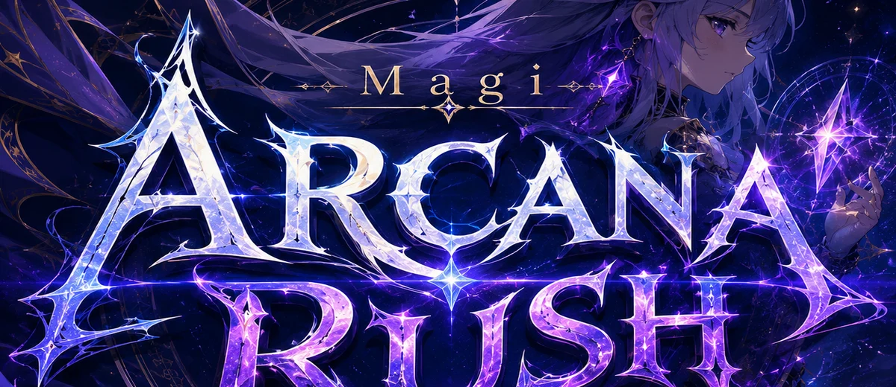

ARCANA FESTIVAL
開催中のピックアップ召喚は XEVARION のガチャから
SUMMON
β版です。Magi: Arcana Rush は MagiBurst の派生作として作りはじめたところです。
キャラクター・ガチャ・所持状況は XEVARION（MagiBurst）と共通で、
このアプリの中にガチャはありません。バランス・演出・追加コンテンツはこれから調整していきます。
QUEST
★ 難易度は Normal → Hard → Expert → Nightmare → Abyss の順に開きます。
★ 出撃にはスタミナを使います（XEVARION 共通・2分で1回復）。
CHARACTER
★ 表示しているのはいま持っているキャラです。所持・レベル・限界突破は
MagiBurst と共通（magiburst_v1）。新しい仲間は XEVARION のガチャから。
PARTY
MEMBERS